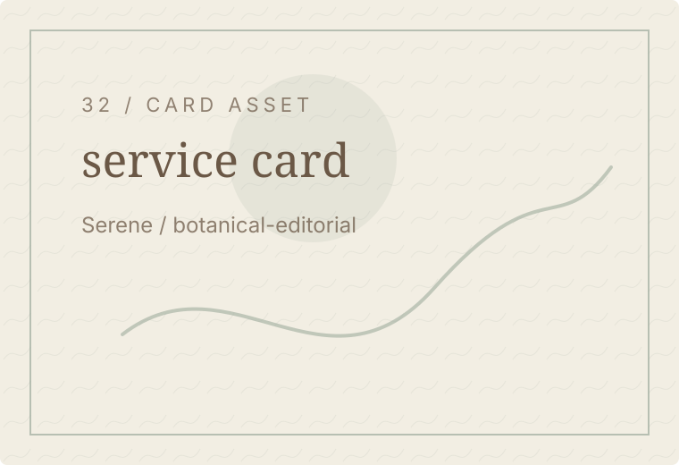

Serene / Results Hero
Responsible results
A calm approach to expectations, planning, and natural-looking confidence.
Serene / Consultation Path
Discuss expectations
A consultation helps clarify what may be realistic for your individual context.
Serene / Planning
Results need planning
Care outcomes depend on assessment, consistency, individual context, and realistic expectations.

Serene / Not Guarantees
No guarantees
This site does not promise identical results or create pressure-based expectations.
Serene / Naturality
Natural confidence
Guidance should support confidence without forcing a single idea of beauty.
Serene / Process
Expectation process
Listening, assessment, planning, and review help keep expectations responsible.
- Listen
- Assess
- Plan
- Review
Serene / Statement Break
Clarity over pressure
The best decisions leave space for questions.
Serene / Related Care
Explore context
Read more about care planning and skin guidance.
Serene / Consent Feedback
Feedback matters
Client feedback should be used with consent, privacy, and responsible context.
Serene / Final CTA
Ask first
Send your question or begin with a calm evaluation.